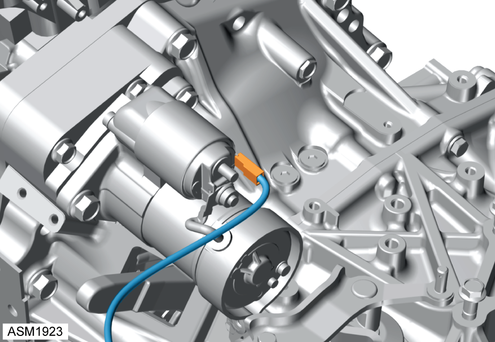
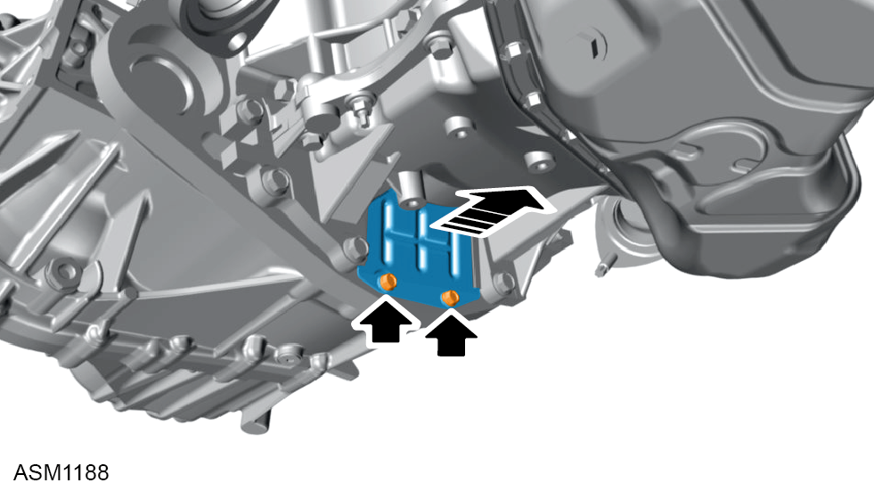
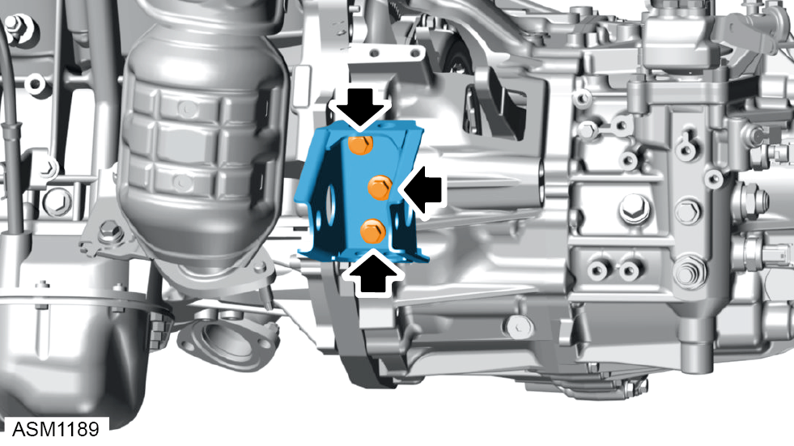
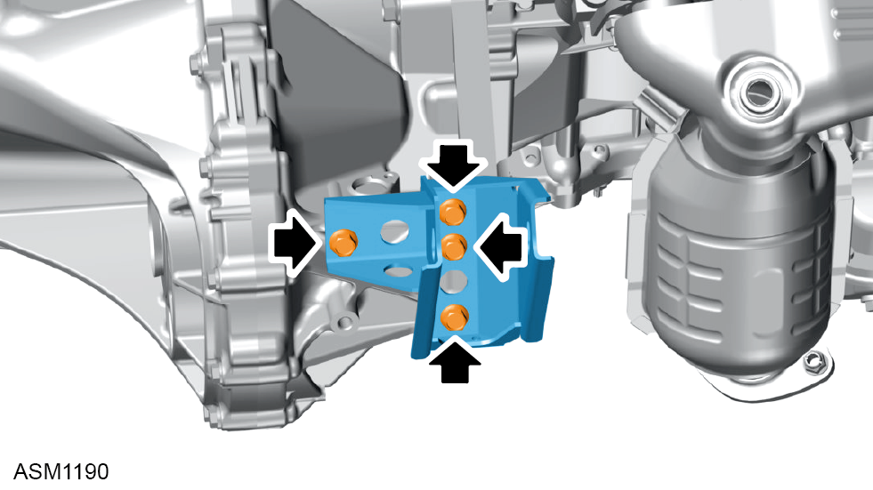
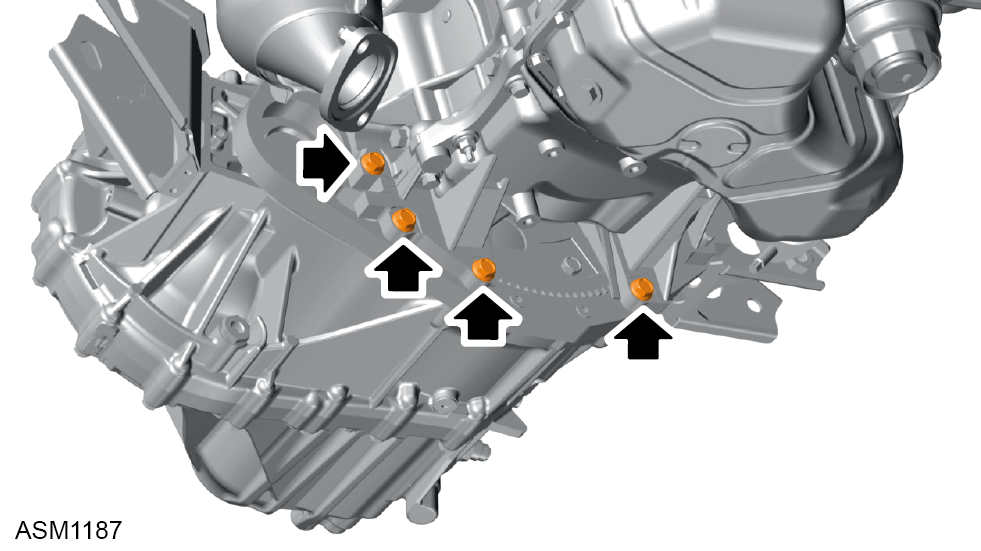
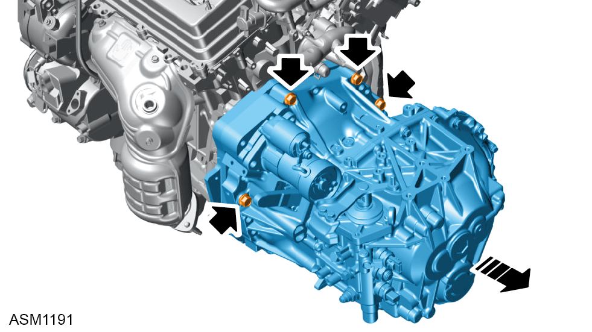

Transmission Assembly - V6
Print
Operation Code: 47.03.01-02
Removal
- Remove engine assembly. Refer to procedure.

- Disconnect harness connector from starter.

- Remove bolts (x2) securing flywheel cover to adapter plate. Torque 9 Nm.
- Remove flywheel cover.

- Remove M10x32 bolts (x3) securing front transmission mount to transmission. Torque 65 Nm.
- Remove transmission mount.

- Remove M10x27 bolts (x4) securing rear transmission mount to transmission. Torque 65 Nm.
- Remove transmission mount.

- Remove M10x75 bolt securing transmission to engine block. Torque 37 Nm.
- Remove M10x60 bolts (x2) securing transmission to engine block. Torque 37 Nm.
- Remove M10x35 bolt securing transmission to engine block. Torque 37 Nm.

- Remove M12x80 bolts (x2) securing transmission to engine block. Torque 46 Nm.
- Remove M12x50 bolts (x2) securing transmission to adapter plate. Torque 64 Nm.
- Using assistance remove transmission assembly.
Installation
- Installation is the reverse of removal procedure.